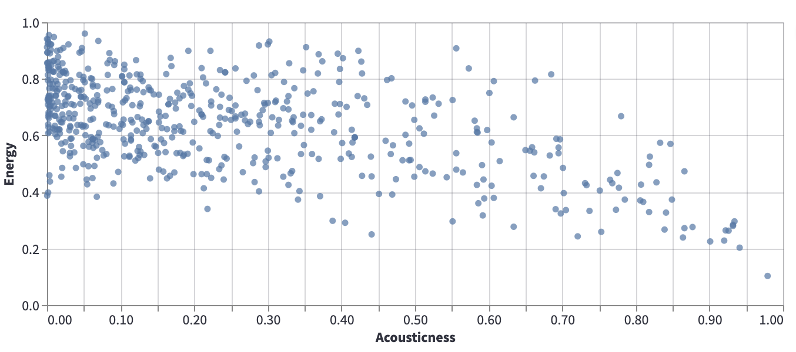

Introduction to Linear Regression¶
Single variable linear regression¶
Consider the following data from our usual Spotify dataset, which shows Acousticness vs Energy.

Certainly there is no line that perfectly models this data, but it can still be valuable to search for a line that approximates the relationship illustrated by this scatter-plot. For example, if we can approximate this data using a \(y = mx + b\) line, then if \(m\) is negative, that tells us that in general, as acousticness increases, the energy tends to decrease.
The question then becomes, how to find a line that does a good job of approximating the data. Given two lines, how do we decide which of the lines better approximates the data? We decide this by defining a cost function (or loss function). The cost function provides a measure of how well a given line approximates the data. The smaller the cost function, the better the approximation, with a cost function value of 0 typically representing a perfect fit.
A cost function for single variable linear regression¶
Let \(m\) denote the number of data points, and let \((x^{(i)}, y^{(i)})\) denote the \(i\)-th data point. (We do not use subscripts here because they will serve a different purpose in multi-variable linear regression.) Let \(y = \theta_0 + \theta_1 x\) denote a linear (degree one) equation, and we want to measure how well this line fits the data. We define the residual sum of squares cost function by
This cost function represents the average value of the squares of the vertical distances between the data points and the line.
If the cost function were to equal zero, that would mean that every data point lies on the line.
The “best” line¶
It turns out there is a “best” linear approximation to the data, in the sense that there is a line for which the above cost function is minimized. (In rare cases there might be more than one best line, where the best lines all produce the same value of \(J\).)
We can find the minimum of \(J\) using calculus. Probably the most important thing to realize is, what are the variables we are allowed to change? The \(m\) the \(y^{(i)}\) and the \(x^{(i)}\) variables are all determined by the data, so we cannot change those. It is the coefficients of the line, \(\theta_0\) and \(\theta_1\), that we have freedom to choose.
Notice that there are two of these variables, so even though this is what I called single-variable linear regression, we cannot use single-variable calculus to solve it, we need multivariable calculus.
Instead of giving the solution, we give the solution for the more general case of multi-variable linear regression.
Setup for multi-variable linear regression¶
For \(i = 1, 2, \ldots, m\), we have an input \(\vec{x}^{\,(i)} \in \mathbb{R}^{n}\) and an output \(y^{(i)} \in \mathbb{R}\).
Given elements \(\theta_0, \theta_1, \ldots, \theta_n \in \mathbb{R}\), we get a corresponding map \(\mathbb{R}^n \rightarrow \mathbb{R}\) given by
We want to find the values of \(\theta_i\) which best model \(\vec{x}^{\,(i)} \leadsto y^{(i)}\).
By “best”, we mean the residual sum of squares loss function is as small as possible, where the loss function is given by
Define an \(m \times (n+1)\) matrix \(X\) whose \(i\)-th row is \((1, x_1^{(i)}, \ldots, x_n^{(i)})\). Let \(\vec{y}\) denote the \(m \times 1\) column vector \((y^{(1)}, \ldots, y^{(m)})^T\), and let \(\vec{\theta}\) denote the \((n+1) \times 1\) column vector \((\theta_0, \theta_1, \ldots, \theta_n)^T\).
We saw on Friday that any critical point (i.e., point where the gradient is zero) would have to satisfy
which after taking transposes would imply
When trying to compute gradients of functions defined in terms of matrix multiplication, I found these notes titled Matrix Differentiation by Randal Barnes to be helpful.